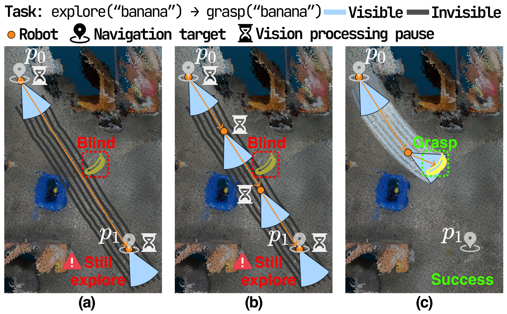
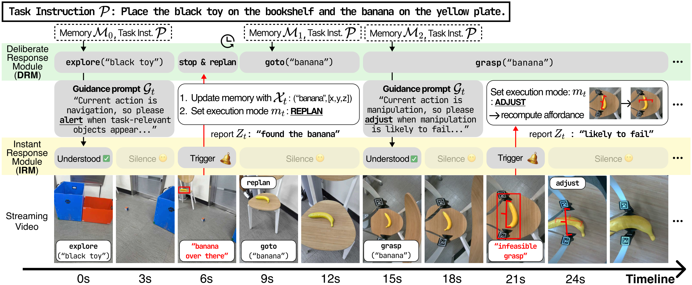
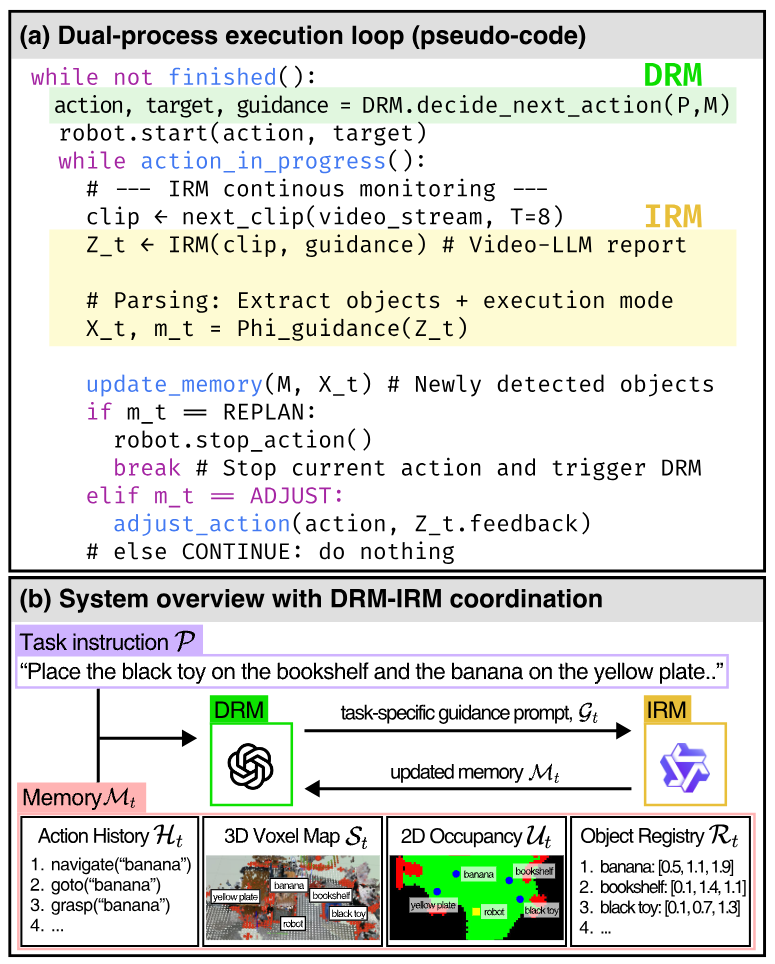
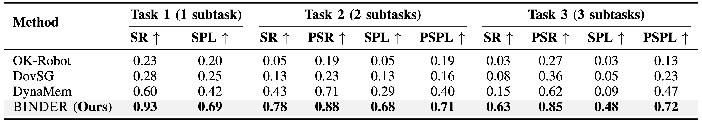

Why do current OVMM systems fail in dynamic environments?
Current OVMM systems rely on 3D semantic scene reconstruction to maintain their world representation. However, this process is computationally expensive (10-30 seconds per update), forcing robots to update only at discrete points. Between these updates, robots are effectively blind to any environmental changes.

A robot tasked with finding and grasping a banana while navigating from p₀ to p₁
e.g., OK-Robot, DovSG
Refresh perception only upon arriving at navigation targets. If the banana appears along the path between p₀ and p₁, the robot completely misses it because it never "looks" during traversal.
e.g., DynaMem
Insert intermediate waypoints for 3D reconstruction. This slows execution with repeated pauses and still leaves blind spots between checkpoints where objects can be missed.
Continuous + On-demand
Maintain continuous visual awareness via lightweight video-stream monitoring while in motion. Trigger on-demand 3D updates only when significant changes are detected.
Key Insight: Not all perception tasks demand the same computational cost. Detecting environmental changes can be handled through lightweight video analysis, while precise 3D geometry is only needed at critical decision points. By separating the two, BINDER resolves the trade-off between continuous awareness and costly updates.
Two modules coordinating bidirectionally throughout task execution
DRM (Deliberative Response Module) handles strategic planning and tells IRM what to monitor, while IRM (Instant Response Module) provides continuous video-stream monitoring and reports significant events back to DRM. This bidirectional coordination enables continuous awareness via lightweight monitoring, with expensive 3D reconstruction triggered only when needed.

Task: "Place the black toy on the bookshelf and the banana on the yellow plate"
Multimodal LLM that decides high-level actions (explore, goto, grasp) and generates guidance prompts telling IRM what to monitor for each phase.
Video-LLM that processes camera streams (1-second clips) and produces structured reports determining execution mode based on DRM's guidance.

Execution loop (a) and shared memory (b)
The outer loop iterates until task completion. At each step, DRM decides the next action and guidance prompt. While the robot executes, IRM monitors continuously and determines one of three execution modes:
Nothing detected → keep going
Local correction without stopping
Stop, 3D update, new plan
3D Voxel Map — Semantic scene, updated at nav targets or REPLAN
2D Occupancy Map — Top-down projection for path planning
Action History — Log of executed actions for context
Object Registry — Discovered objects with 3D positions, populated by both modules
The guidance prompt from DRM configures IRM's monitoring focus and response criteria for each task phase:
IRM monitors for task-relevant objects appearing in the scene. If a target object is spotted mid-path → REPLAN triggers immediate 3D update and plan revision to grasp the object.
IRM monitors grasp feasibility and execution quality. Pose misalignment → ADJUST regenerates candidates locally. Critical failures (repeated fails, unavailable receptacle) → REPLAN.

Task complexity scales from 1 to 3 pick-and-place subtasks. 40 trials per task with dynamic perturbations applied during execution.
BINDER achieves 93% success rate on single-subtask and 63% on three-subtask scenarios, compared to the strongest baseline DynaMem's 60% and 15% respectively. The gap widens with task complexity as baseline methods suffer from compounding failures.
@inproceedings{choASCKC26,
author = {Cho, Seongwon and Ahn, Daechul and Shin, Donghyun and Choi, Hyeonbeom and Kim, San and Choi, Jonghyun},
title = {BINDER: Instantly Adaptive Mobile Manipulation with Open-Vocabulary Commands},
booktitle = {ICRA},
year = {2026},
}